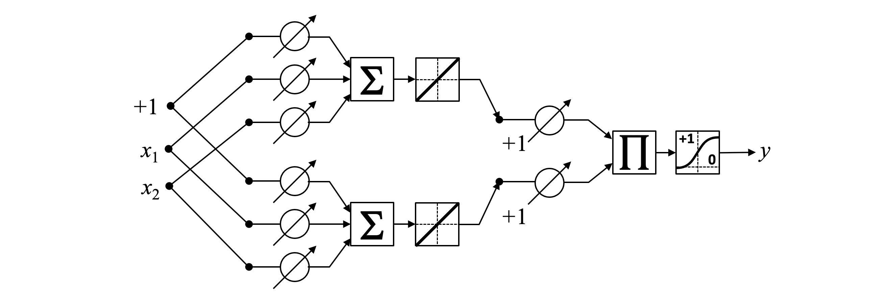
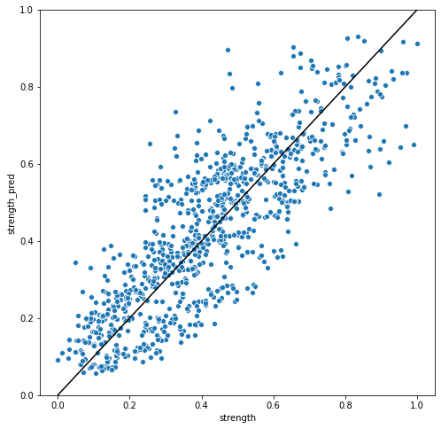

Redes Pi-Sigma
41:42 min | Última modificación: Mayo 31, 2021 | [YouTube]
[1]:
import warnings
warnings.filterwarnings("ignore")
## Definición
Esta es una red neuronal de alto orden, con una sola capa oculta y las siguiente características:
La activación de las neuronas de la capa oculta es realizada con la función identidad \(g(x) = x\).
La capa de salida no tiene una neurona bias.
La función de agregación de la neurona de la capa de salida es una multiplicatoria.
La neurona de salida tiene una función de activación sigmoidea
\[y = \sigma
\left(
\prod_h (w_h^* + \sum_i w_{i,h} x_i)
\right)\]
donde:
\(w_h^*\) representan los pesos de las neuronas bias en la capa oculta.
\(\sigma()\) es la función de activación.
\(w_{i,h}\) es el peso de la conexión que va de la entrada \(i\) a la neurona \(h\) de la capa oculta.

Caso de aplicación
[2]:
import pandas as pd
df = pd.read_csv(
"https://raw.githubusercontent.com/jdvelasq/datalabs/master/datasets/concrete.csv",
sep=",",
thousands=None,
decimal=".",
)
df.head()
[2]:
| cement | slag | ash | water | superplastic | coarseagg | fineagg | age | strength | |
|---|---|---|---|---|---|---|---|---|---|
| 0 | 540.0 | 0.0 | 0.0 | 162.0 | 2.5 | 1040.0 | 676.0 | 28 | 79.99 |
| 1 | 540.0 | 0.0 | 0.0 | 162.0 | 2.5 | 1055.0 | 676.0 | 28 | 61.89 |
| 2 | 332.5 | 142.5 | 0.0 | 228.0 | 0.0 | 932.0 | 594.0 | 270 | 40.27 |
| 3 | 332.5 | 142.5 | 0.0 | 228.0 | 0.0 | 932.0 | 594.0 | 365 | 41.05 |
| 4 | 198.6 | 132.4 | 0.0 | 192.0 | 0.0 | 978.4 | 825.5 | 360 | 44.30 |
Preparación de los datos en scikit-learn
[3]:
import matplotlib.pyplot as plt
import seaborn as sns
from sklearn.preprocessing import MinMaxScaler
#
# Se escalan todas las variables al rango [0, 1]
# para evitar problemas asociados a la escala
#
scaler = MinMaxScaler()
df_norm = pd.DataFrame(scaler.fit_transform(df), columns=df.columns)
plt.figure(figsize=(10, 6))
sns.boxplot(data=df_norm)
plt.xticks(rotation=90);

[4]:
X_train = df_norm.drop(columns="strength")
y_train = df_norm.strength
Preparación de los datos en TensorFlow
[5]:
import tensorflow as tf
dataset_train = tf.data.Dataset.from_tensor_slices(
(X_train.values, y_train.values)
).batch(1)
for feat, targ in dataset_train.take(5):
print ('Features: {}, Target: {}'.format(feat, targ))
Features: [[1. 0. 0. 0.32108626 0.07763975 0.69476744
0.20572002 0.07417582]], Target: [0.96748474]
Features: [[1. 0. 0. 0.32108626 0.07763975 0.73837209
0.20572002 0.07417582]], Target: [0.74199576]
Features: [[0.52625571 0.39649416 0. 0.84824281 0. 0.38081395
0. 0.73901099]], Target: [0.47265479]
Features: [[0.52625571 0.39649416 0. 0.84824281 0. 0.38081395
0. 1. ]], Target: [0.48237199]
Features: [[0.22054795 0.36839176 0. 0.56070288 0. 0.51569767
0.58078274 0.98626374]], Target: [0.52286035]
Modelo
[6]:
from tensorflow.keras import backend as K
class PiSigma(tf.keras.Model):
def __init__(self, H, name="pi_sigma_network", **kwargs):
super(PiSigma, self).__init__(name=name, **kwargs)
self.inputs = tf.keras.Input(shape=(None, 8))
self.hidden_layer = tf.keras.layers.Dense(units=H)
def call(self, inputs):
out = self.hidden_layer(inputs)
out = K.prod(out, axis=1)
out = tf.keras.activations.sigmoid(out)
return out
[7]:
def compile_and_evaluate(model):
model.compile(optimizer="adam", loss="mean_squared_error")
model.fit(dataset_train, epochs=20, verbose=0)
return model.evaluate(dataset_train, verbose=0)
Modelos
[8]:
#
# Diccionario para guardar los resultados para cada modelo
#
results = {}
[9]:
for h in range(1, 6):
results[h] = compile_and_evaluate(PiSigma(H=h))
print("H={}, loss={}".format(h, results[h]))
H=1, loss=0.018922824412584305
H=2, loss=0.013441460207104683
H=3, loss=0.014006700366735458
H=4, loss=0.013145573437213898
H=5, loss=0.013124664314091206
Resultados
[10]:
import numpy as np
H_OPT = np.argmin(np.array([results[k] for k in results.keys()])) + 1
model = PiSigma(H=H_OPT)
model.compile(optimizer="adam", loss="mean_squared_error")
model.fit(dataset_train, epochs=20, verbose=0)
df_norm["strength_pred"] = model.predict(X_train)
plt.figure(figsize=(8, 8))
sns.scatterplot(x="strength", y="strength_pred", data=df_norm)
plt.plot([0, 1], [0, 1], color="black")
plt.ylim(0, 1)
plt.show()
